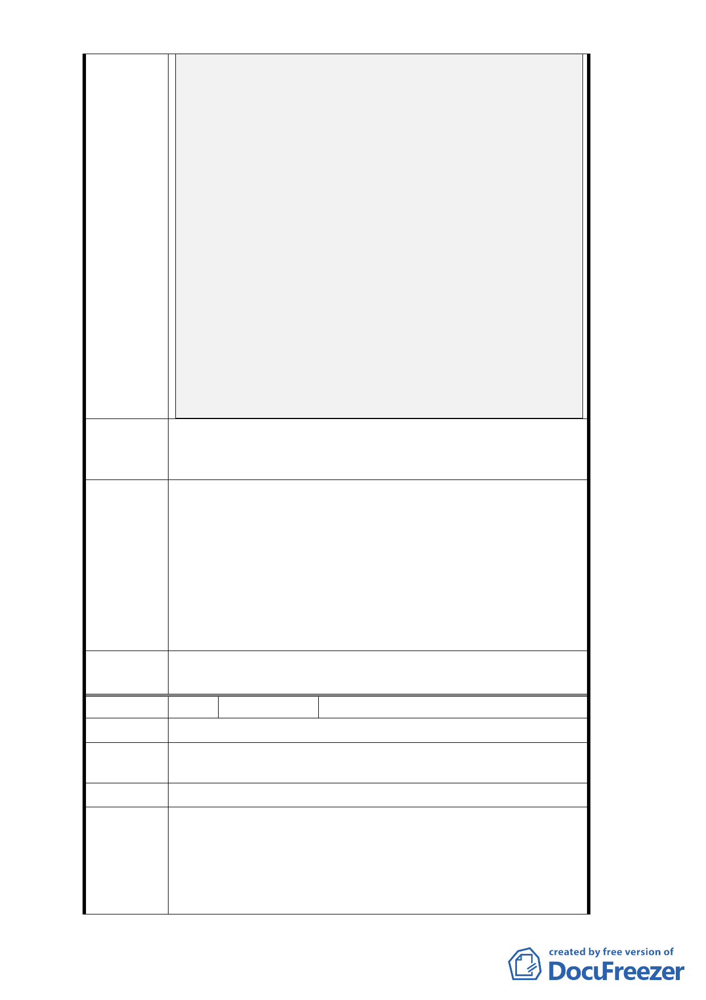

如何期限內申請復議？
這又是誰的錯，沒有一個單位承認，只會用法規來逃避責
任！
陳述理由三／
（1） 再次搬出護身符維持原計畫，納入「區域通盤」
兩年內公文往返被耍了團團轉，最後回到原點，又是誰的
錯？
（2） 透過立委協調，內政部營建著代表提出法規，同意重提，
建議由市長簽報內政部，結果都發局一直沒有消息，在躲
問題，寫信向郝市長陳情也被攔截，相當不滿！又是誰在
搞鬼！欺下瞞上，不對嗎？
陳述理由四／
（1） 由最後台北市都發局老羞成怒，來個殺手鐧「依行政程序
第 173 條暨本府文書處理實施要點第 167 點規定，如無提
出其他具體新事由，將不再處理。」
（2） 這是一個什麼政府單位，一直躲避問題，不承認有錯，表
面上依內政部都委會決議，其實是閃問題，有用嗎？陳情
有用嗎？
1. 除改為商業區，行業別放寬。
建議辦法 2. 因為中華路二段南北主幹道車流量大，應放寬建蔽率
及容積率。
1. 本案變更住宅區為商業區係依「修訂臺北市主要計畫
商業區（通盤檢討）計畫案」通案原則辦理及「變更
都市發展
局建議處
理意見
『修訂臺北市主要計畫商業區（通盤檢討）計畫案』
內有關商業區變更回饋相關規定案」辦理，故允許使
用之行業別已有大幅放寬。
2. 依前開商業區通檢之通案性原則，應維持原使用分區
之建蔽率及容積率；如有增加建築容積之需求，仍建
議循都市更新及容積移轉等相關獎勵規定辦理。
委
決
員
會
議
同意依都市發展局建議處理意見辦理。
編 號2
陳情人 徐瑞麒
陳情位置 中正區中華路二段 101 號
陳情理由
因房屋老舊希望更新，建議住宅區變更商業區同時比照商
業區增加可建容積以利建築。
建議辦法 變更商業區同時增加容積（比照商業區）
本案變更住宅區為商業區係依「修訂臺北市主要計畫商業
都市發展 區（通盤檢討）計畫案」通案原則辦理及「變更『修訂臺
局建議處 北市主要計畫商業區（通盤檢討）計畫案』內有關商業區
理 意 見 變更回饋相關規定案」辦理，依前開商業區通檢之通案性
原則，應維持原使用分區之建蔽率及容積率；如有增加建
- 20 -